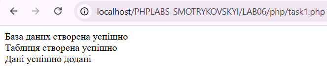
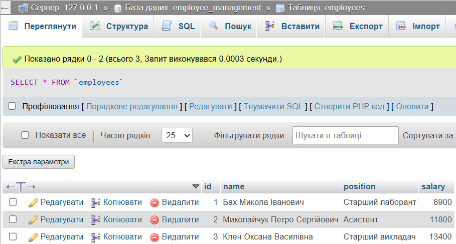
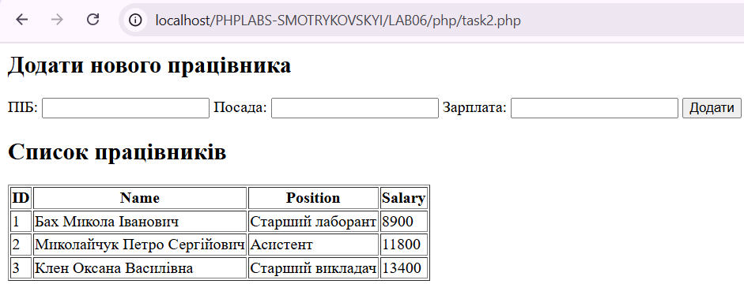
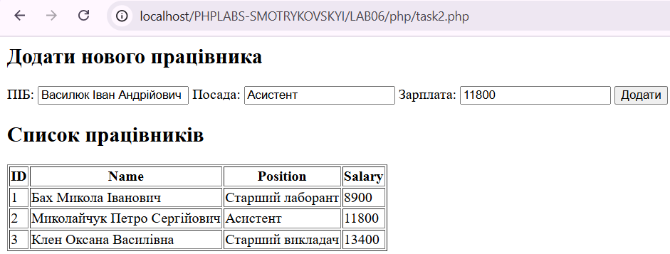
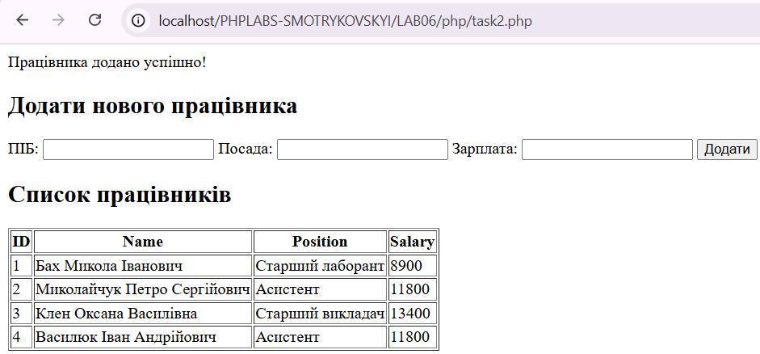
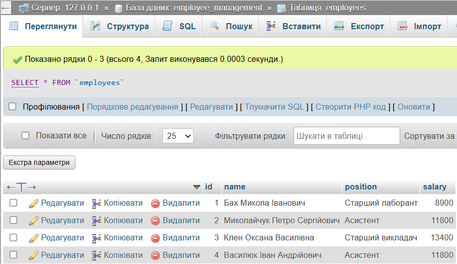
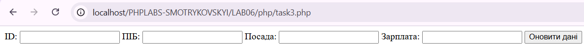
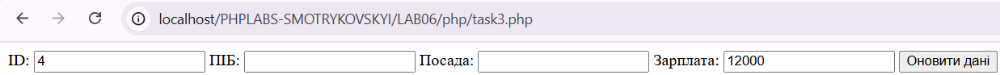
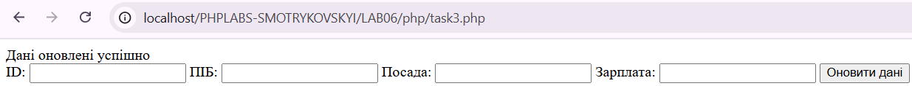
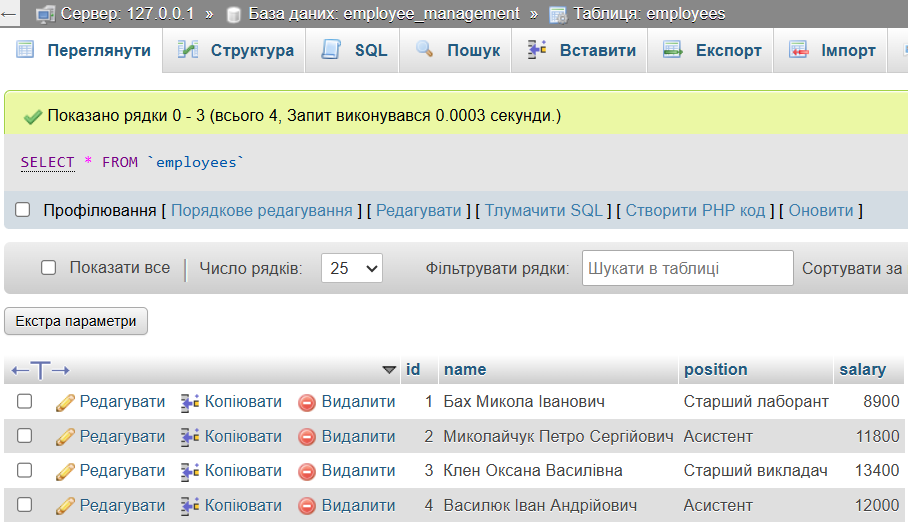

Лабораторна робота №6
Тема: Взаємодія з MySQL. CRUD операції.
Виконав: Смотриковський Леонід Леонідович
Група: KN1-B22
Варіант: 4
Дата виконання: 30.05.2025
Завдання
- Завдання 1.
Створити базу даних "EmployeeManagement" та таблицю "Employees" зі стовпцями: id, name, position, salary.
Перейти до коду


- Завдання 2.
Реалізувати функціонал для додавання нового працівника та відображення списку всіх працівників.
Перейти до коду




- Завдання 3.
Додати можливість редагування даних про працівника за його id.
Перейти до коду



